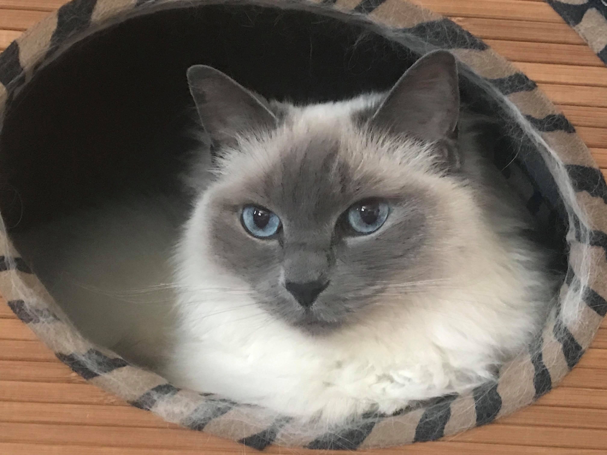
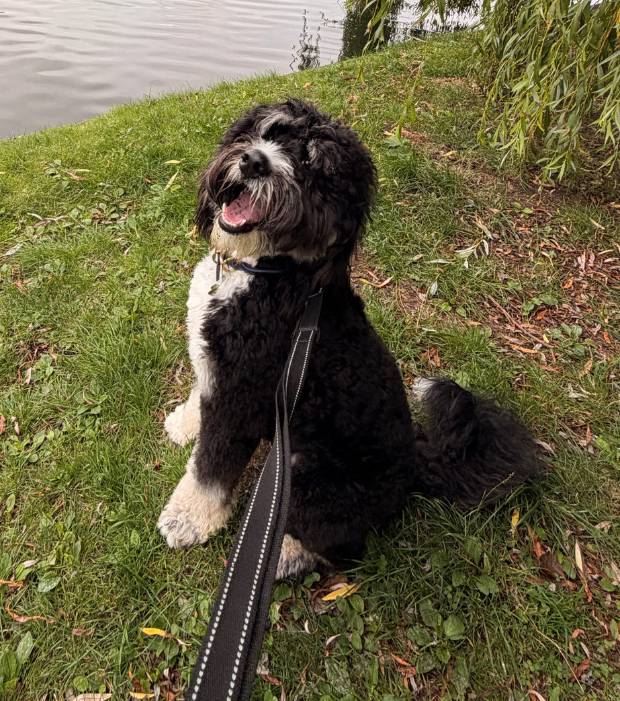
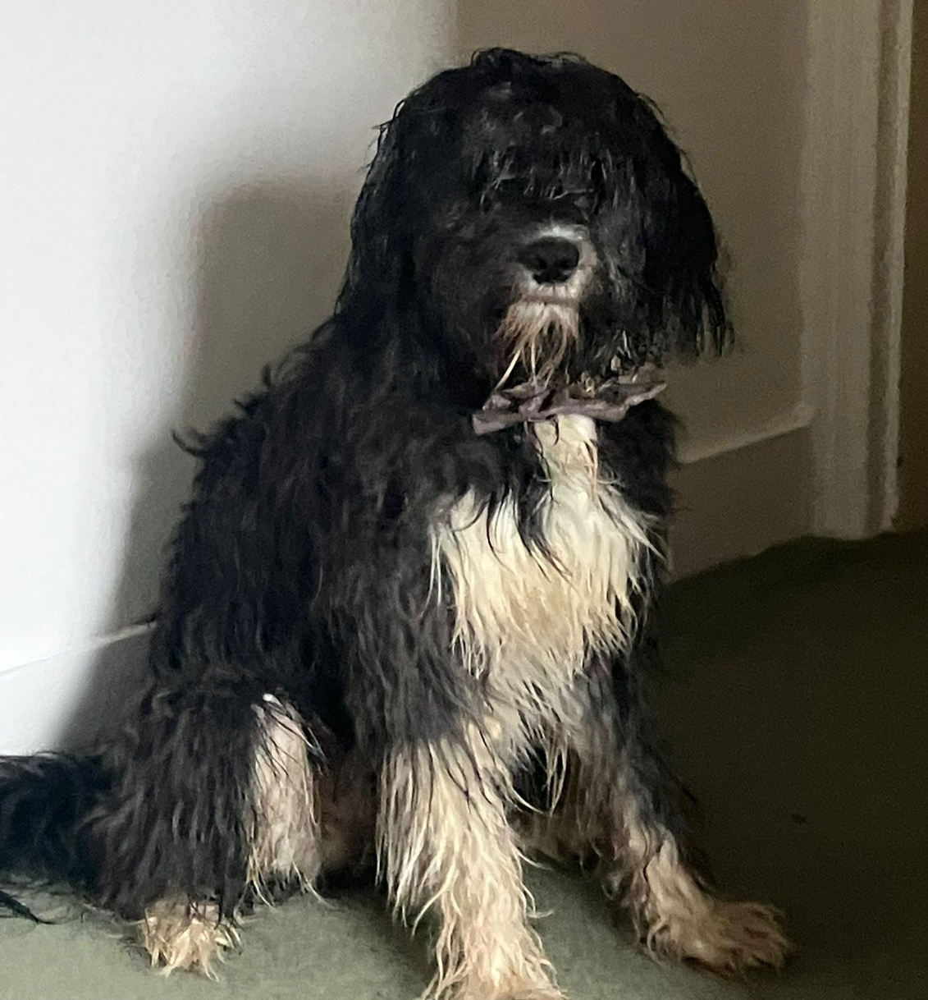
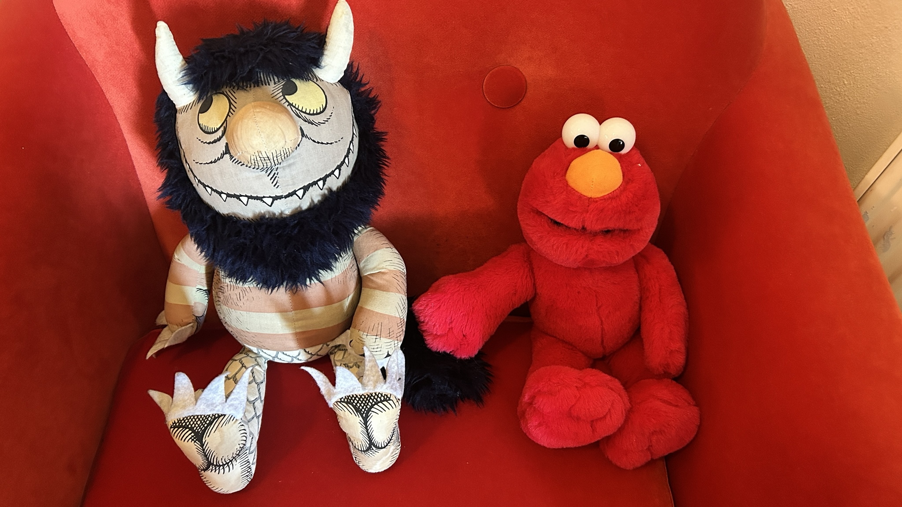
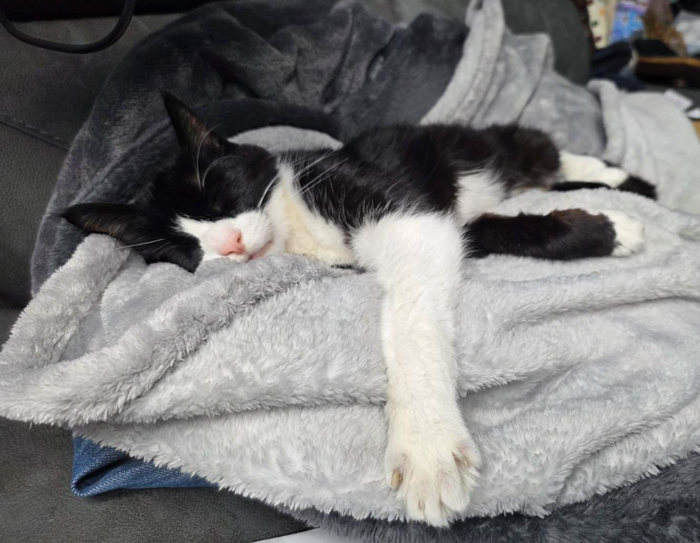
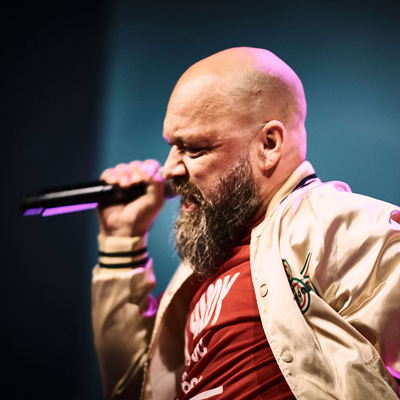

← All demos

Lollycat
former owner of Jo Minney

Archie
superhero of Michelle Frost
Fia
ridiculous toy of Anders Noras

Treacle
partner in crime of Emmz Rendle

Wild Thing & Elmo
support animals of Luise Freese

Buddha
owner of Martin Thwaites
Lollycat
former owner of Jo Minney
former owner of Jo Minney
She was the sweetest kitty who ever was
OK so her real name was actually LOL - she was adopted, and before she joined our household she had a brother named ROFL who thought he was a dog.
She ran our household and every morning we had to let her outside so she could inspect the backyard and drink her own body weight in water from flowerpots until she literally made gurgling sounds if you picked her up. RIP sweet baby.
Floof rating
15/10
Archie
superhero of Michelle Frost
superhero of Michelle Frost
Not all heroes wear capes
Although, I'm sure you'll agree that Archie would look very dashing in a cape. If you run into Michelle at a conference you might even get to meet him!
Archie is a trained service dog, and makes sure that Michelle stays safe if she experiences an epileptic seizure.
Floof rating
15/10
Fia
ridiculous toy of Anders Noras
Fia

the hooman
ridiculous toy of Anders Noras
Surely this level of adorable can't be real
Friends assure me that this is not in fact a stuffed toy. I'm still on the fence, but she clearly meets the criteria for being an excellent floof.
One might argue that she has enough hair for both of them...
Floof rating
13/10
Treacle
partner in crime of Emmz Rendle
partner in crime of Emmz Rendle
This dog has seen some things
Have you ever woken up not knowing where you are and you can't remember the last 24 hours and you have a stamp on your wrist that says 'not today Satan' and you inexplicably smell like popcorn and bad choices?
Treacle has.
Floof rating
11/10
Wild Thing & Elmo
support animals of Luise Freese
Wild Thing & Elmo
the hooman
support animals of Luise Freese
I don't think those count as pets
I included them anyway for the LOLs but this is what Luise sent through when I asked in the group chat for pet photos. Although admittedly these two do seem much less likely to set your house on fire or get arrested for selling drugs than Treacle.
Floof rating
6/10
Buddha
owner of Martin Thwaites
owner of Martin Thwaites
Lavish me with attention, human
Do you ever look at a cat and just think - I wish that was me? She looks so relaxed. I bet she's never woken up having inexplicably sprained an ankle in her sleep...
Floof rating
12/10
Progressive enhancement, live
What this browser is giving you right now. Every tick is decided by @supports, not JavaScript. Opening and closing animate with @starting-style and discrete transitions; the dialog stays in the top layer while it fades out thanks to overlay.
CSS · graded live by @supports
@starting-style the dialog fades and lifts intransition-behavior: allow-discrete animate to and from display: noneoverlay stay in the top layer while closingbackdrop-filter blur the page behind ::backdrop@container the profile stacks when the dialog is narrow@layer cascade order · no layers, no styles at all
HTML · CSS can't grade these, so check Can I use
Full disclosure: Safari has invoker commands from 26.2 and no closedby yet, so there a click outside won't close the dialog. Escape and the close button still will.